ハイフォン市内飲食店紹介
佐藤冨妃
去年ベトナム研修で行ったお店とそのお店の看板メニューを紹介します。ホテル・大学周辺共に美味しいお店が沢山あるのでぜひ行ってみてください。
ホテル周辺の飲食店
バインダークア（Bánh ĐaCua）ハイフォン発祥のカニ出汁スープの米粉麺料理。
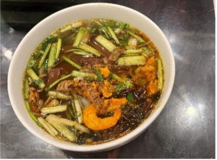
- Bún Tôm 164 Lương Khánh Thiện
ブンカーカイ（Bún Cá Cay）揚げた魚のすり身などが入っていて、ハーブを添えて食べられる。
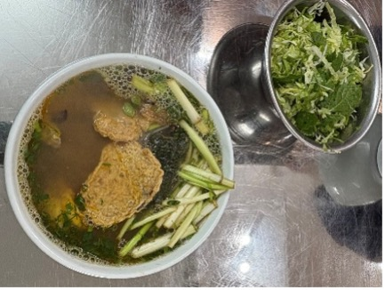
バインセオ（Bánh Xèo）米粉のココナッツミルク、ターメリックを使ったクレープのような生地に豚肉・エビ・もやしなどを包んだ料理。
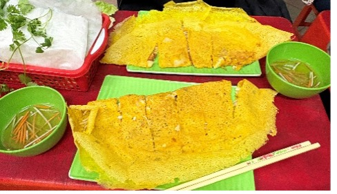
Sủi dìn（スイジン）中に黒ゴマとココナッツが入った白玉。
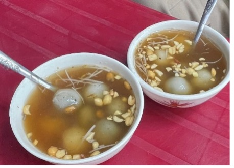
ネムヌオン（Nem Nướng）豚のひき肉に味付けをして串に刺して焼き上げたもの。ライスペーパー、生野菜、ブン（米麺）などと一緒に甘酸っぱいタレにつけて食べる。
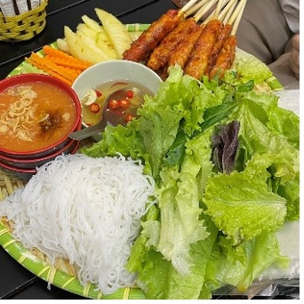
貝料理（Ốc）ベトナムでは貝料理が人気で、レン貝のココナッツミルク炒めハマグリのレモングラス蒸しなどがある。
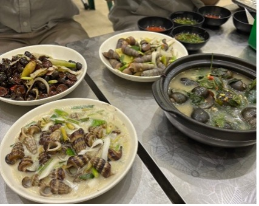
バインミーチャオ（Bánh mì chảo）鉄板に乗せられた目玉焼き、肉、ハム、パテなどの具材を、パンと一緒に食べる。
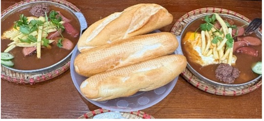
ブンボーフエ（bún bò Huế）ピリ辛の牛骨スープにブンと呼ばれる太い米麺と牛肉の塊が入った牛肉米麺。
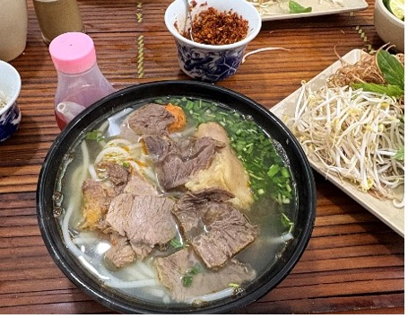
- Mẩy - Bánh đa cua, Bún chả, Nem lụi
ブンチャー（Bún chả）炭火で焼いた豚肉や肉団子が入った甘酸っぱいスープに米麺（ブン）、レタスやハーブなどの生野菜、揚げ春巻きなどをつけて食べる。
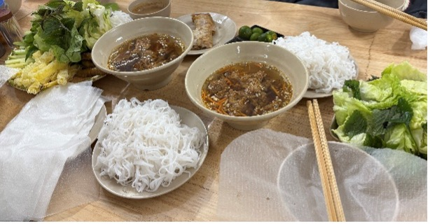
- KATINAT ĐINH TIÊN HOÀNG - HẢI PHÒNG
ベトナムのカフェチェーン。地域ごとの文化や嗜好に合わせた設計が印象的で、映えるドリンクがSNSを賑わせている。
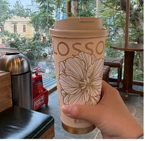
ベトナムNo.1のコーヒーチェーン。街中至るところにあり、練乳を使った甘いベトナムコーヒーを中心に様々なドリンクメニューを提供している。
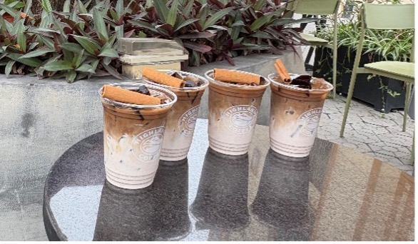
- CHÈ CUNG ĐÌNH HUẾ - BÁNH XÈO
チェー（Chè）ベトナムの伝統的なスイーツで、甘く煮た豆類や芋類、フルーツ、寒天などをココナッツミルクと合わせたもの。
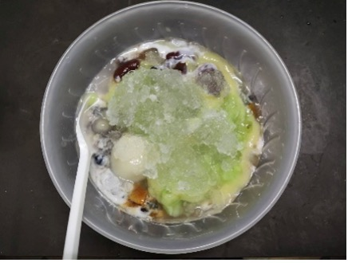
- Bánh Canh Cá Lóc - Cố Đô Huế - Cơ sở 1
Bánh Canh（バインカン）タピオカ粉や米粉を混ぜて作られた太い麺が特徴のベトナム風うどん。濃厚なカニスープと組み合わせて提供される。
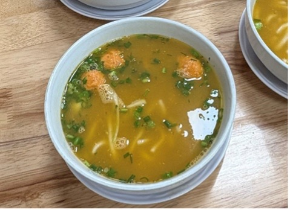
日本とは少しメニューが違い、スパゲッティやご飯ものが多いイメージ。たくさんあるので行ってみてください！
宿泊地・大学からは遠い飲食店 ベトナム料理以外の飲食店
バインミー（Bành mi）フランスパンに野菜や肉、なますをはさんだサンドイッチ。手軽さと味のバリエーションから現地の人に愛されている。
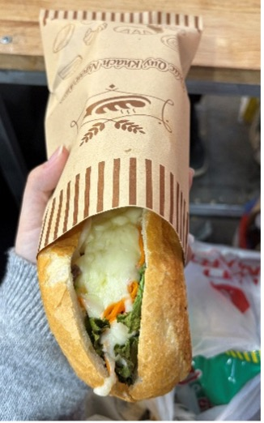
- Pizza 4P's - Aeon Mall Hai Phong
ベトナムにて日本人オーナーが立ち上げたピザレストラン。グローバルで32店舗展開している。ハイフォン市内のイオンモールの中にあり、日本で食べるより安い価格で食べられます！
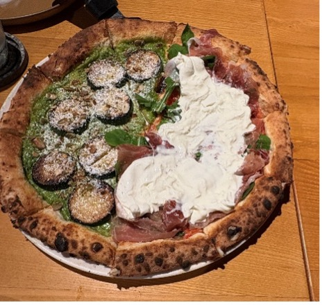
ハイフォン市内飲食店リスト
今回紹介した飲食店をGoogle mapにまとめました！大学とホテルの場所も入っています。
ハイフォン市内飲食店リスト